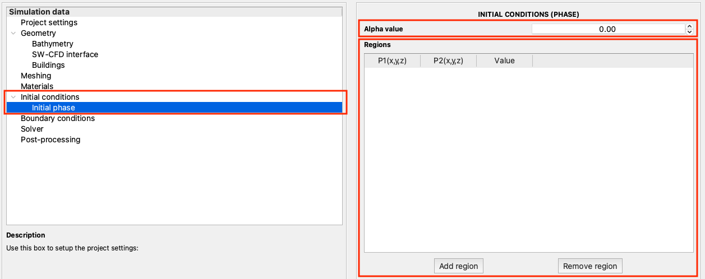

2.4.1.5. Initial conditions
The initial settings window can be activated by selecting the option from the left panel as shown in Fig. 2.4.1.5.1. At present, this option is available only to set the initial height of the water in the domain. By default, the domain is defined to contain only air (i.e., alpha is zero). It is, thus, necessary to define a box where water is present (i.e., alpha is one).
This is automatically set using the shallow-water solutions for simulation types involving coupling between shallow water and CFD. This must be manually provided for all other simulation types using the tabular format shown in Fig. 2.4.1.5.1.

Fig. 2.4.1.5.1 Initial settings panel available in EVT
The first information pertains to the global value of
alpha. This is0.0by default and implies the presence of air throughout the domain.Each region is a cuboid and specified using the diagonal points. The diagonal points are provided in columns one and two as a triplet of values referring to the
x,y, andzcoordinates. A value ofalphacan be set for each of these regions.